Beyond hospitality, a community-centred café where sustainability is the story.
The project
Juneberry is a minimalist specialty-coffee café in Surat that reimagines everyday hospitality as a place where craftsmanship, sustainability and human connection meet, answering a growing need for spaces that invite reflection and community rather than efficiency and overconsumption.
A neutral palette and natural materials replace bold ornamentation: sculpted plaster feature walls, reel-wood furniture and refined white powder-coated metal make a calm, timeless room guided by the owner's vision of understated comfort. Almost every surface tells a quieter story of waste reclaimed as craft.
Principal Designer Bhavin Swami · Senior Designer Dev Kajiwala · Art installation Artitude Satyarth · Photography Kenny Zaveri
The making
Hand-sculpted Plaster of Paris feature walls with a quiet grid texture, no wallpaper, no synthetic finishes.
Hangings hand-stitched from waste textiles, naturally dyed in coffee and earth tones, placed to filter the day's sun.
Wood-waste mountain ranges, banana-stem canvases and oxidised-metal figurines, discarded material reborn as art.
Reel-wood composite furniture and locally made upholstery in place of virgin timber.
The space

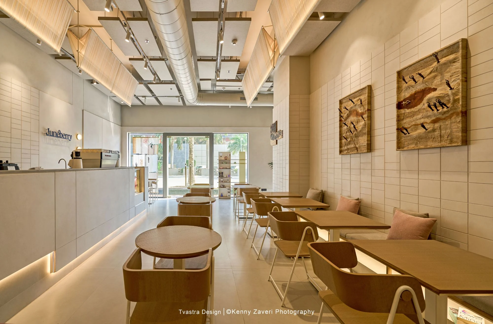
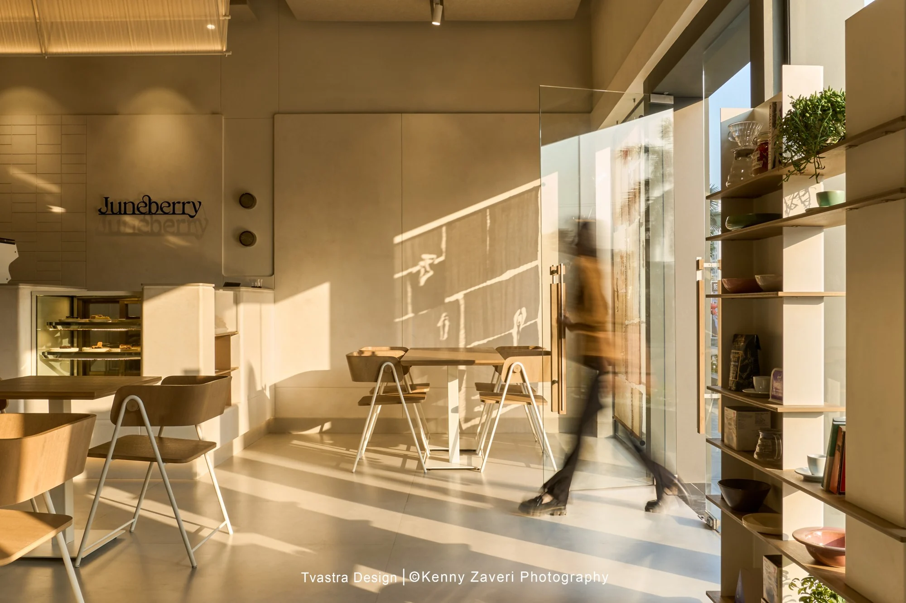
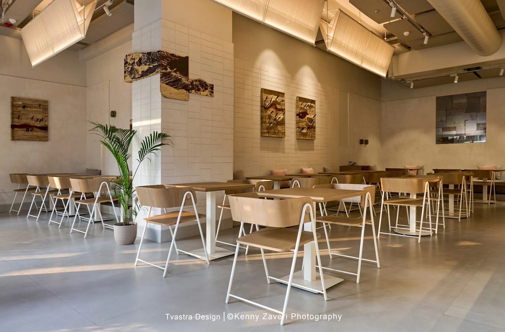

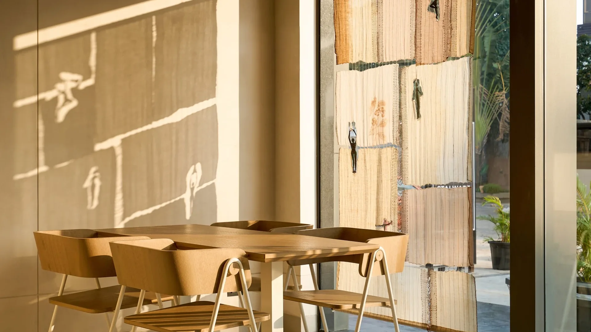
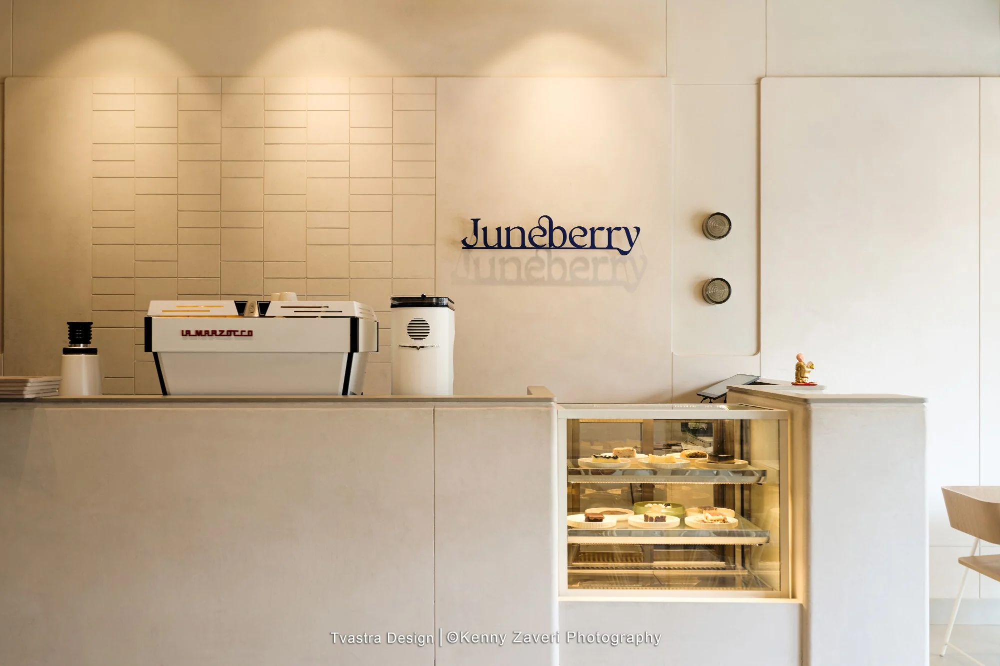
Beyond the coffee
Bookshelves built into the seating turn the café into a place to read, share and slow down.
Textile screens tuned to the sun's path fill the room with shifting daylight and cut the need for artificial light.
Greenery softens the street-to-interior threshold while acoustic ceilings hush the urban noise.
Concealed sources behind translucent fabric diffusers keep the glow soft and intimate.
Moments
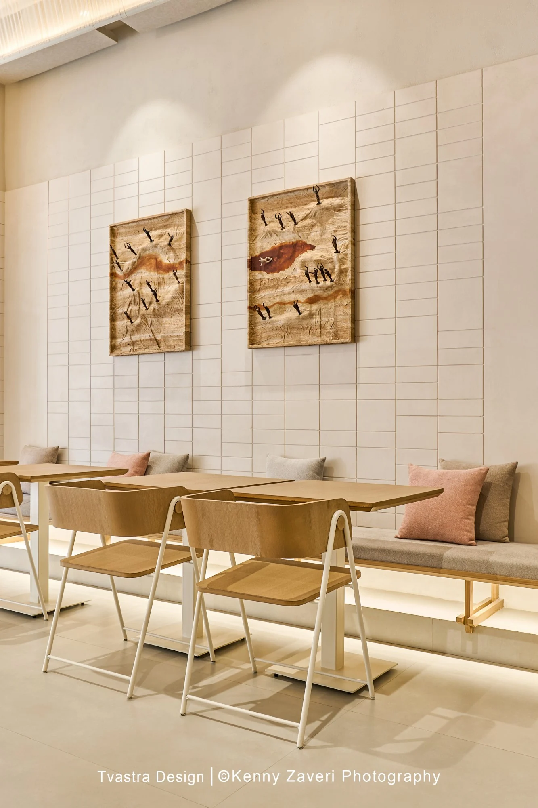
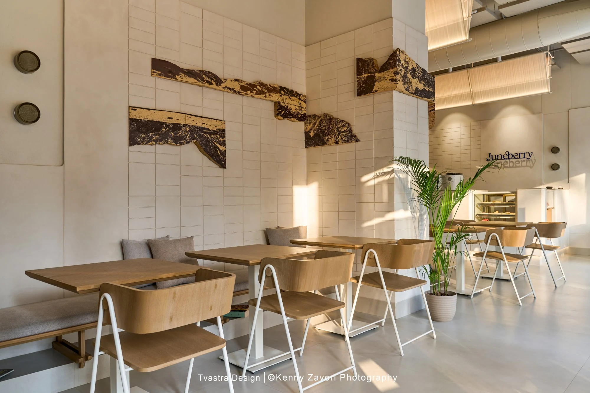
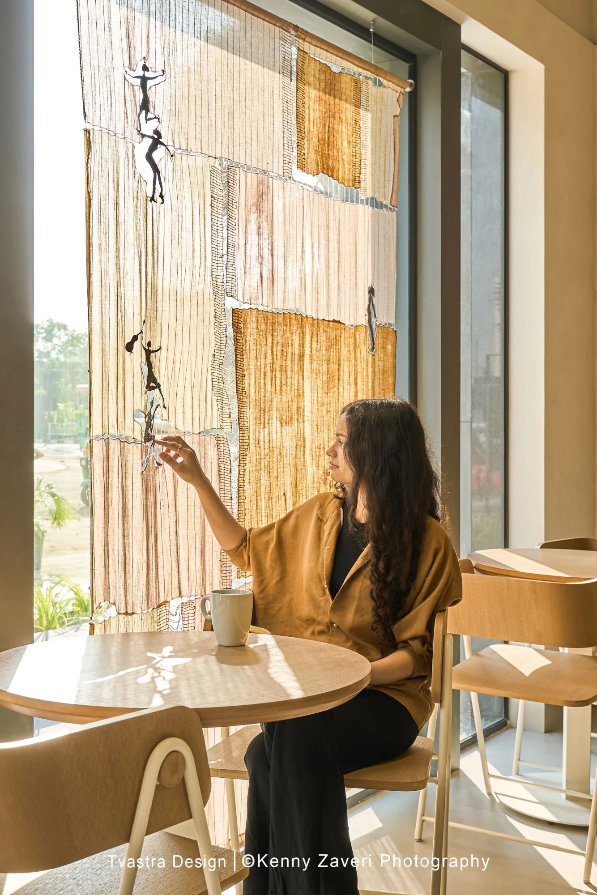
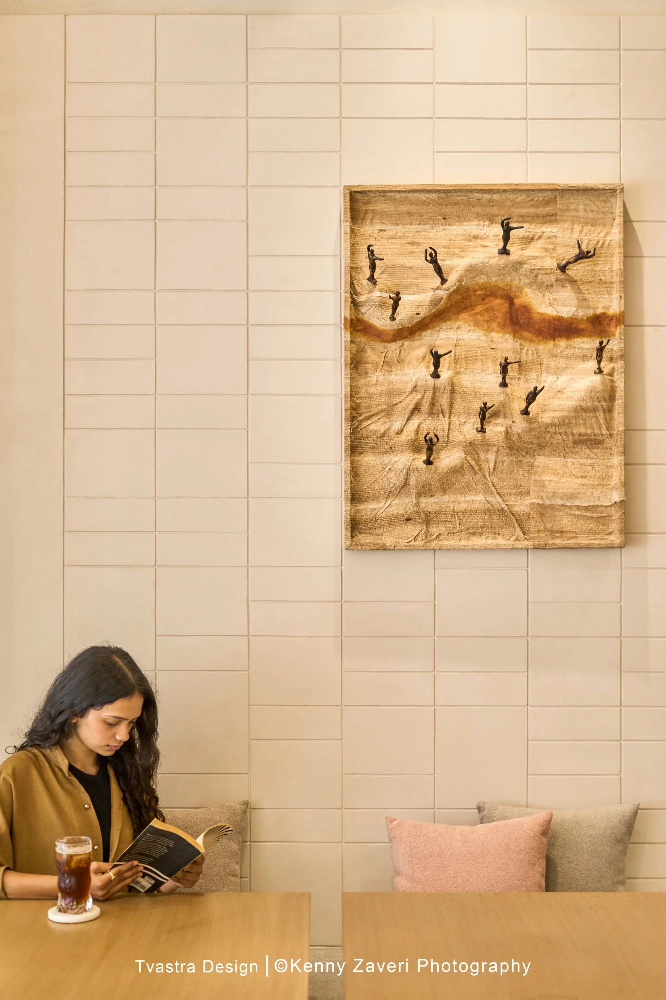
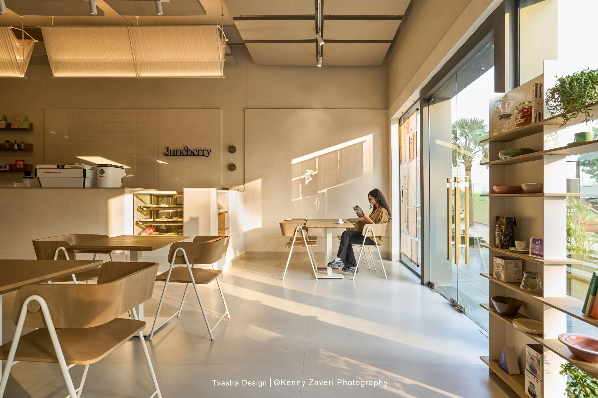
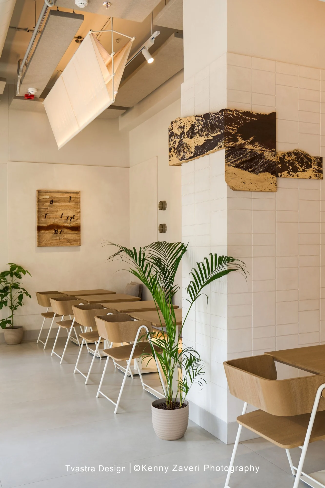